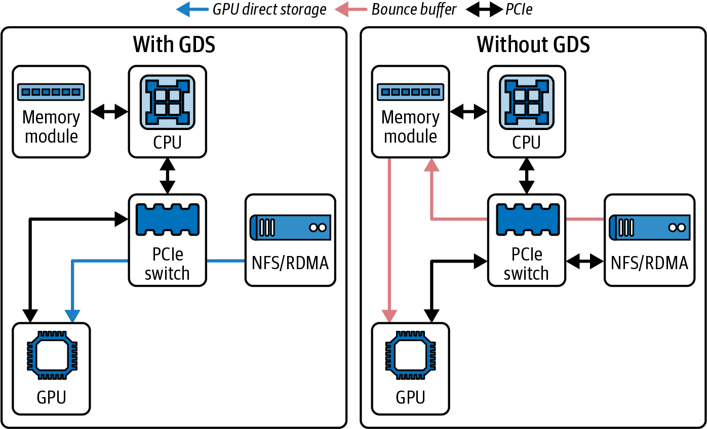
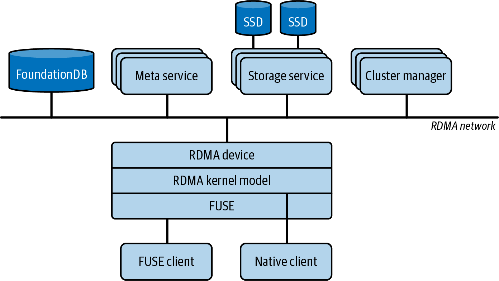

对 AI 工作负载而言，持续向 GPU 提供数据与计算本身同样重要。设想一个在数千块 GPU 上训练的 100 万亿参数模型，它可能处理数十亿个训练样本，包括 token、图像、音频和视频等。
这意味着必须从存储系统读取海量数据，并及时送入 GPU。如果存储与输入流水线过慢，GPU 会因等待数据而空闲；即使采用前文介绍的通信优化，整体利用率仍会很低。
本章讨论存储与输入流水线优化，重点介绍如何高效读取本地或远端存储、预处理数据，并在依赖与资源允许时将 I/O 和预处理与 GPU 计算重叠。
大型模型训练通常需要读取庞大数据集。大语言模型的数据单位可能达到数十亿乃至数万亿 token 或样本记录；文本语料可达 TB 级，视觉或多模态数据可达 PB 级。具体容量取决于编码、去重、压缩和 epoch 重用方式。
在超大规模训练中，存储系统必须为可能持续数月运行的数千块 GPU 稳定提供足够吞吐。原文进一步写到“数百万 GPU”，但没有可复核的现实部署依据。将 NVMe SSD 部署在计算节点或机架附近，或使用具备机架局部拓扑的 NVMe over Fabrics（NVMe-oF），可以减少部分网络跳数并改善性能一致性；实际效果仍取决于共享比例、交换网络、控制器和故障域。
如果数据位于 NFS 或 Amazon S3 等网络存储，需要确认所有计算节点的聚合读取带宽以及元数据/请求速率均足够。假设根据模型和 batch 实测，每块 GPU 需要 200 MB/s 的输入数据，8 块 GPU 合计约需 1.6 GB/s。Blackwell、Rubin 等新 GPU 可能提高处理能力，但输入带宽需求不是由 GPU 型号单独决定，而取决于模型、样本、压缩、缓存命中和预处理。应以目标 workload 的 bytes/sample 与 samples/s 计算，而不是只追求让设备饱和。
NVIDIA Grace Blackwell GB200/GB300 NVL72 在一个 NVLink fabric 域内连接 72 块 Blackwell GPU。按每块 GPU 200 MB/s 计算，聚合需求为 72 × 200 MB/s = 14.4 GB/s；原文给出的 14–20 GB/s 中，上限 20 GB/s 需要额外余量或更高的单 GPU 假设。容量规划还应计入协议开销、突发、检查点、shuffle、元数据和降级冗余。
如果工作负载流式处理体积更大的媒体或多模态样本，应使用实测 bytes/sample 与 samples/s 校准。还要分别统计存储读取字节、解压后字节和送入 GPU 的字节，因为它们可能相差很大。
一种方案是使用节点或机架内的 NVMe SSD，或设计合适的 NVMe-oF 拓扑；另一种是使用 Lustre、IBM Storage Scale（原 GPFS）等并行文件系统。并行文件系统本身不等同于“把数据缓存到本地 SSD”，本地缓存/分层通常还需客户端缓存、burst buffer、数据预置或专门的数据加速层。存储具备足够吞吐后，还需配置合适的数据加载进程、线程、预取和解码并行度。Python GIL 只影响执行 Python bytecode 的线程；C/C++ I/O、解码库或多进程 loader 的瓶颈需要分别分析。
在成本、容量和可靠性允许时，应提高数据局部性。“近”可以是同一节点的本地 NVMe SSD，也可以是同一机架或低跳数高速 fabric 上的 NVMe-oF/存储服务。标准名称为 NVMe over Fabrics（NVMe-oF），不是原文写法 “NVME-oF”。局部副本还会增加预置时间、容量占用和一致性管理成本。
在分布式多节点训练中，可以把数据集预分片或缓存到各节点，让节点优先读取本地子集。例如，100 TB 数据分布到 10 个容量足够的节点时，可让每节点持有约 10 TB 主分片。不过还需考虑 epoch shuffle、数据均衡、节点故障、弹性扩缩容和副本；严格“只读本地 10 TB”可能降低全局随机性或使故障后数据不可达。
PyTorch 的 DistributedSampler 按 rank 划分 dataset 索引，并可按 epoch 确定性 shuffle，以减少同一 epoch 内重复处理；它不知道文件实际位于哪个节点，也不会自动实现存储局部性。要让逻辑样本分片与本地文件分片对齐，需要定制 dataset/sampler、清单或缓存路由，并正确调用 set_epoch()。
GPU 处理数据很快，输入流水线通常也能从较大、连续的传输中获得更高效率。存储设备和文件系统在大型顺序读取时通常比 4 KB 级随机读取获得更高吞吐，但现代 NVMe 的随机 IOPS 也很高，实际差距取决于 queue depth、并发、缓存、压缩和文件系统。因此，数据布局应尽量把常见访问组合成适当大小的连续区间，而不是机械取消训练所需的随机性。
例如，图像训练若保存数百万个独立小文件，瓶颈往往来自 open/stat、目录查找、权限和远端元数据请求，而不只是机械磁盘的随机 seek。可以把样本打包为大小适中的 shard，例如 TFRecord、WebDataset tar、数据库/record 文件，或在模式适配时使用 Arrow/Parquet。格式选择应考虑压缩、随机访问索引、局部损坏、并行 worker、重写成本和生态工具；“少数几个超大文件”并不总是理想布局。
随着 GPU 处理速度提高，把小文件组合为较大 shard 往往更重要，因为元数据和小请求更容易暴露为瓶颈。现代并行文件系统与对象存储能处理一定程度的并发小访问，但能力依元数据服务、分区键、请求配额和客户端而异，必须显式测试。
从较大 shard 读取一个连续区间，可以一次取得多个样本并摊薄请求成本。Amazon S3 等对象存储中也常预先合并小对象，但 shard 不宜过大：过大的对象会降低细粒度并行、增加重试与更新成本，并可能导致 worker 负载不均。通常需要按目标请求大小、range GET、缓存和失败恢复选择 shard 大小。
还应调节读取大小。1 MB 读取通常比 4 KB 读取更容易获得高吞吐，因为每次系统调用、协议和设备命令的固定成本被摊薄，但最佳值取决于样本、cache、direct I/O 对齐、设备和并发。Python open() 提供用户态 buffered I/O；内核 readahead 是独立机制，不能把二者混为同一个“OS read-ahead buffer”。随机访问也可能从应用缓存、合并读取或异步并发受益。
可以把相邻请求合并为较大连续区间，或使用高级 dataset API，例如 TFRecordDataset，以及 PyTorch 的 IterableDataset/DataLoader。这些 API 并不自动保证顺序读取；访问模式由 dataset 实现、sampler、worker 分片和 shuffle buffer 决定。应共同调节 buffer、prefetch、worker 数量和内存上限。
如果访问必须随机，可通过线程调用 pread()，或使用 Linux io_uring 等异步接口并发提交多个读取。io_uring 支持批量提交、固定文件/缓冲区和可选 polling，可减少部分系统调用与注册开销；但文件系统、内核、direct/buffered I/O 模式和设备仍决定是否真正异步，以及 polling 是否值得占用 CPU。提高 queue depth 有助于隐藏延迟，但过高并发会增加队列、cache 污染和尾延迟。
文件系统和挂载配置应匹配大型并发 I/O。XFS 常用于 Linux NVMe 服务器；noatime 可避免读取时更新访问时间，但现代 Linux 默认的 relatime 已减少许多写入，实际收益需测量。Amazon EFS 的 General Purpose 与 Max I/O 是 performance mode；Max I/O 面向高度并行、可容忍更高操作延迟的旧/特定工作负载，并非所有场景的“最高性能”。throughput mode 还包括 Elastic、Provisioned 等当前选项，选择与可否变更应以文件系统创建配置和最新 AWS 文档为准。任何模式都不能自动保证满足大规模 AI I/O，应通过 CloudWatch 与端到端基准验证。
现代 Linux 使用多队列块层 blk-mq，把软件/硬件队列映射到多个 CPU。blk-mq 是块层架构，不是某个具体 I/O scheduler。高速 NVMe 的有效 queue depth 和硬件队列数由驱动、控制器与 workload 共同决定，通常先采用默认值；对低开销设备可测试 none，对需要延迟控制或公平性的场景可测试 mq-deadline 等策略，不能仅凭“顺序读取”决定。
旧式 completely fair queueing（CFQ）scheduler不属于 blk-mq 路径；现代系统可能为 NVMe 使用 none、mq-deadline 或发行版/设备选择的其他 scheduler。可通过 /sys/block/<device>/queue/scheduler 查看当前与可选策略。none 的低软件开销常适合 NVMe，但并非所有低延迟或多租户负载的固定最佳项；部分设备还可见 BFQ 或 kyber 等策略。
高性能 NVMe 可先比较 none 与 mq-deadline，但选择应同时考虑吞吐、尾延迟、公平性和 CPU 开销。可在对应 namespace/block device 的 /sys/block/nvme*/queue/scheduler 检查设置；修改前应确认 device-mapper、RAID 或容器看到的实际块设备层级，并通过可重复基准验证。
另一个可调项是 readahead。内核在检测到顺序读取时会预取后续页面，可在 /sys/block/<device>/queue/read_ahead_kb 查看块设备设置。默认值并不保证是 128 KB；大型顺序流可能从更大窗口受益，随机读取则可能浪费带宽并污染 page cache。readahead 主要合并/提前底层读取，不会直接减少应用发出的 read syscall 数量。可通过 blockdev --setra 设置以 512-byte sector 为单位的值，必须注意它与 sysfs 中 KB 单位不同。
使用 NVMe SSD 时，应核对 PCIe generation、lane width、NUMA/PCIe switch 拓扑和实际链路协商状态，避免控制器或共享上行成为瓶颈。多个 SSD 可通过 RAID 0/软件 striping 提高聚合吞吐，但 RAID 0 没有冗余，任一设备故障都会影响整个阵列；训练数据必须可重建或另有可靠副本。也应确认 CPU、PCIe switch 和文件系统能支撑聚合带宽。
Linux page cache 会用可用 RAM 缓存文件页面。数据集远大于内存且访问缺少局部性时，可能出现较低命中率和回收开销；这不一定是严格意义的“thrash”，应结合 cache hit、major fault、reclaim 与设备 I/O 判断。能重复命中的 warm cache 可以显著减少后续存储读取，但基准必须区分 cold-cache 与 warm-cache 结果。
如果数据或高频子集能放入 CPU RAM，可考虑预热 page cache、应用 cache 或 RAM-backed 数据层，以减少训练期间磁盘 I/O。但预加载会增加启动时间、内存压力和多进程副本风险。Grace Blackwell 的 CPU LPDDR 与 GPU HBM 通过 NVLink-C2C 提供 coherent 访问，但仍是不同物理内存池；不能把容量简单相加后称为无差别的“CPU + GPU unified memory”缓存。PB 级数据通常需要流式读取、分层缓存和可控预取。
数据加载通常需要多个 worker，例如 PyTorch DataLoader(num_workers=N)。当 num_workers 大于 0 时，DataLoader 使用独立进程而不是“CPU threads”；每个进程可并行读取和预处理，但会带来进程启动、IPC、内存复制/共享和文件描述符开销。最佳 worker 数需结合每个训练进程、CPU affinity、NUMA、存储和解码库实测。
第 13 章和第 14 章将深入讨论 PyTorch 调优。这里先说明：pin_memory=True 让 DataLoader 尝试把返回 tensor 放入 pinned host memory，non_blocking=True 在源为 pinned memory、设备和 stream 支持时允许 H2D copy 异步入队；真正与计算重叠还需独立 stream、正确依赖和硬件 copy engine。persistent_workers=True 可避免每个 epoch 重启 worker，但会保留其内存和状态。prefetch_factor 应按 workload 调节；num_workers 大于 0 时常见默认值为每 worker 2 个 batch，但语义和默认值应以当前 PyTorch 版本为准。
worker 太少可能让 GPU 等待数据；太多则会争用 CPU 核心、内存、文件描述符和 I/O 带宽。应同时监控 batch ready time、GPU idle、CPU/NUMA、存储吞吐、IOPS 与尾延迟。目标不是让磁盘长期接近 100% busy，因为队列饱和可能显著恶化延迟；应以满足训练 goodput 且保留恢复/检查点余量为准。
高核心数 CPU（例如部分 GB200/GB300 Superchip 配置中的 Grace CPU）可能支持更多 loader worker，但可用核心数、SMT、容器 cpuset 和具体 SKU 必须从实际系统确认，不能把 “72-core” 当成所有 GB200/GB300 节点的统一配置。还应注意 I/O、内存带宽和 IPC 争用带来的边际收益递减。
GPUDirect Storage（GDS）允许兼容的存储路径与 GPU 内存直接进行 DMA，从而避免在 CPU 内存中建立额外的数据副本。传统路径通常先把 NVMe SSD 数据读入主机内存，再通过 CUDA copy 将其传至 GPU 内存。
GDS 与 GPUDirect RDMA 相互补充：前者面向存储到 GPU 的 DMA 路径，后者面向网络设备到 GPU 的 RDMA 路径。两者都不会消除 CPU 的配置和编排工作，其关键收益是避免主机内存 bounce buffer。
使用 GDS 时，存储设备或 NIC 的 DMA engine 可执行直接内存访问（DMA），把数据传入 GPU HBM，而不经过额外的主机内存副本。原文称“GPU 发起 DMA”，容易误解：应用和 CPU 仍负责提交与控制 I/O。GDS 可支持本地 NVMe，也可在兼容的软件、文件系统和网络栈上支持 NVMe-oF 等远端存储。
实际部署中，GDS 在存储与 GPU 内存之间建立绕过主机内存 bounce buffer 的 DMA 路径。具备专门集成的集群文件系统以及部分对象存储接入方案也可使用这一路径，但不能仅凭存储类型推定兼容；CPU 仍负责配置、提交、完成处理和错误管理。
启用 GDS 需要受支持的 NVIDIA GPU、驱动和 CUDA/GDS 组件，以及兼容直接 DMA 的存储栈。本地 NVMe SSD 或 RAID volume 是常见方案，但具体支持范围随 GDS、内核、文件系统和厂商插件版本变化。原文列举了在 XFS/EXT4 上结合 O_DIRECT 的本地 NVMe 与 NVMe-oF、NFS over RDMA，以及 BeeGFS、WekaFS、VAST、IBM Storage Scale 等集成 nvidia-fs 或相应接口的系统；部署时应以当前 NVIDIA 支持矩阵和存储厂商文档为准。
应用还必须使用相应 API，例如通过 CUDA 的 cuFile 库执行 GDS 文件 I/O。cuFile 提供缓冲区注册、对齐处理以及与受支持文件系统的集成，但并不意味着任意普通文件都会自动走直接路径。
如果 GDS 已正确配置，并且读取路径使用 cuFileRead，数据便可从存储直接进入 GPU 内存。这通常能降低 CPU 利用率，并在主机副本是瓶颈时提高吞吐。cuFileRead 使用 Linux 文件描述符接入文件系统；cuFile 的异步 API cuFileReadAsync 和 cuFileWriteAsync 可把存储 I/O 与 CUDA stream 协调起来，在依赖、对齐、后端和硬件允许时实现流水化或重叠，第 11 章还会讨论 stream。
在后端要求且访问模式合适时使用 O_DIRECT，可以绕过 OS page cache，并满足某些直接 DMA 路径的条件。现代 GDS 版本的 cuFile 也可能接受非 O_DIRECT 文件描述符，但会依配置使用兼容路径；缓冲区、offset 或长度未对齐可能引入额外复制、失败或性能下降。
WekaIO、DDN、VAST、Cloudian 等存储厂商提供了支持 GDS 的产品或插件，使其系统能在兼容 RDMA 路径上把数据传入 GPU 内存。不过，这并不表示所有企业 NAS 或并行文件系统都能“开箱即用”；仍需匹配产品版本、客户端、驱动、网络、文件系统协议和许可配置。
VAST Data 的厂商报告称，在其特定 AI workload 中，单块 A100 采用 GDS 后顺序读取吞吐提高约 20%，在适用配置上更接近每 NIC 100 Gb/s 的链路容量。该结果不是 GDS 的通用保证，且链路速率不能直接等同于应用有效吞吐。图 5-1 对比了使用和不使用 GDS 的架构。

图左侧是经过主机内存复制的传统 staged DMA，右侧是借助 GDS 绕过主机内存副本的直接路径，可降低 CPU 利用率。VAST 的报告称，Ampere A100 的读取吞吐提高约 20%，Hopper H100 提高 30% 以上；原文把差异归因于更高 NIC 带宽和更重 CPU 负担，但这属于特定厂商配置下的测量，不能仅由 GPU 架构推导。
应在目标 workload 与 fabric 上验证收益，因为结果会随 I/O 大小、queue depth、NIC 代际、拓扑、文件系统实现和缓存状态而变化。
GDS 往往需要调优，而且并非所有 workload 都会显著提速。如果 CPU 原本就能轻松处理传输，吞吐可能变化不大；CPU 占用也通常会下降，但降幅取决于实际是否走直接路径。若主机因大量 memcpy 饱和，GDS 的潜在收益更大，仍应以端到端训练 goodput 验证。
使用 GDS 时，必须正确满足 O_DIRECT 语义和对齐要求。直接存储到 GPU 的路径不使用 host pinned memory 作为 staging buffer。cuFile 注册 GPU device buffer，nvidia-fs 或当前受支持机制协调存储设备/RDMA NIC 与 GPU 内存之间的 DMA。它以 POSIX 文件描述符接入，因此 cuFile 可用于受支持的普通文件；网络文件系统仅在协议、客户端和厂商实现明确支持 GDS/RDMA 时可用，并非“支持 RDMA”这一条件本身就足够。
例如，每个训练 batch 为 1 MB、每秒向 GPU 提供 1,000 个 batch，对应约 1,000 MB/s 的逻辑输入率。原文断言 CPU copy 会轻易占用几个核心，但实际 CPU 成本取决于 copy 次数、内存带宽、NUMA、并行度和预处理，不能从 1 GB/s 单独推导。GDS 可消除相应 staging copy 并释放部分 CPU；速率更高或扩展到数千块 GPU 时，这一聚合收益可能更明显，但也会受到存储和网络瓶颈限制。
训练数据路径通常以读取为主，因此多数 GDS 性能结果聚焦存储读取；快速写入 checkpoint 同样重要。要让写入走 RDMA 加速的 GDS 路径，文件系统、客户端、网络和 GDS 版本必须共同支持相应 write path。
WekaFS 是面向大规模 AI 训练的并行文件系统之一，并提供支持 GDS 的读取和写入集成。是否真正通过 RDMA 直接访问 GPU 内存，应按其当前兼容矩阵、部署配置和运行时遥测确认。
在 Linux 上，可以把 NVIDIA 的 cuda-checkpoint 工具与 Checkpoint/Restore in Userspace（CRIU）等 CPU 进程检查点工具配合使用，以保存 GPU 状态。cuda-checkpoint 在运行中的进程内挂起 CUDA，等待已提交工作完成，把 device memory 复制到由驱动管理的 host allocation，并释放 GPU 资源；随后，CPU 侧检查点工具便可对进程制作快照。
挂起路径会锁定 CUDA driver entry point，排空未完成工作，将 device memory 复制到主机并释放 GPU 资源。估算挂起时间时，需要同时考虑实际占用的 device memory 容量，以及挂起期间可用的 GPU 到主机互连带宽。
由于驱动会在挂起阶段把 device memory 复制到 host allocation，有效挂起时间至少受到内存映像大小和平台互连的约束，还包括排空 kernel、同步、分配及驱动管理等开销。应在 lock 和 checkpoint 调用周围设置标记，并使用 Nsight Systems 或相应时间测量来确认挂起阶段的实际耗时。
恢复进程时，驱动重新取得 GPU，把 device memory 映射回原虚拟地址，恢复 stream、context 等受支持的 CUDA object，然后解除 driver/process lock，使 CUDA 调用可以继续执行。可恢复的对象和限制应以所用 CUDA 与驱动版本的兼容文档为准。
具体而言，CUDA Driver API 提供 cuCheckpointProcessLock、cuCheckpointProcessCheckpoint、cuCheckpointProcessRestore 和 cuCheckpointProcessUnlock。恢复前需要启用 persistence mode，或调用 cuInit 完成相应初始化；在受支持的条件下，可以重新映射到相同 chip type 的其他物理 GPU，但这不表示任意 GPU、拓扑或节点之间都可无条件迁移。
需要注意，这条路径与框架级模型 checkpoint（例如 PyTorch checkpoint）解决的问题不同。CUDA 进程 checkpoint 可用于长时间训练或推理作业的抢占、迁移与某些故障恢复流程，但其可靠性仍取决于 CRIU、驱动、CUDA 状态、外部资源和分布式协调是否都受支持。
与使用 GDS 输入数据不同，这条 checkpoint 路径不会把 GPU memory 直接 DMA 到存储。驱动先在挂起期间把 device memory 映像移入 host memory，再由 CRIU 将进程内存持久化为 checkpoint image。因此，它应作为框架 state dict 或 sharded checkpoint 文件的补充，而不是替代品；后者仍负责可移植的模型、优化器、数据迭代与分布式训练状态。
NVIDIA 提供了 gdsio 工具，默认安装在 /usr/local/cuda/gds/tools 下，用于测试存储与 GPU 之间的 GDS I/O。它很适合验证路径是否生效并建立受控基准。
原文称 GDS 的吞吐提升常达到 10%–20% 甚至更多，尤其是在 CPU 受限场景；这只是经验范围，不是性能保证。下面使用 NVIDIA 的 gdsio 工具，示意比较 CPU-mediated read（“之前”）和直接 GDS read（“之后”）。以下是 CLI 命令及 throughput/latency 输出：
# Before (Storage → CPU Memory only)# CPU path, host memory, async copies (-x 2)$/usr/local/cuda/gds/tools/gdsio\-f/mnt/data/large_file\-d0-w4-s10G-i1M-I0-x2TotalThroughput:8.0GB/sAverageLatency:1.25ms
第一个调用在 read mode（-I 0）下使用带 pinned host memory 和异步复制的 CPU 路径（-x 2）建立 baseline。下面的第二个调用保持其他参数相同，并在 read mode（-I 0）下启用 GDS 路径（-x 0）。比较时必须一致地使用 transfer selector；在这里，gdsio 的 -x 2 测量 CPU-mediated transfer，-x 0 测量 GDS 路径。参数语义仍应以所安装版本的帮助和文档为准：
# After (Storage → GPU Memory using GPUDirect Storage)# - same config, GDS path (-x 0)$/usr/local/cuda/gds/tools/gdsio\-f/mnt/data/large_file\-d0-w4-s10G-i1M-I0-x0TotalThroughput:9.6GB/sAverageLatency:1.00ms
在这组示意输出中，GDS 直接路径的吞吐比 CPU 路径高 20%，平均 I/O latency 也相应降低，见表 5-1。绕过 host buffer staging 还可能减少 CPU copy 工作。不过，书中没有给出硬件、文件系统、cache 状态、重复次数或统计分布，因此这些数字不能视为可复现实验；实际验证应控制文件、I/O size、并发、对齐、warm-up 和 cache 条件，并同时记录 CPU 利用率。
| 路径 | 吞吐 | 延迟 |
|---|---|---|
| 存储 → CPU（不使用 GDS） | 8.0 GB/s | 1.25 ms |
| 存储 → GPU（使用 GDS） | 9.6 GB/s (+20%) | 1.00 ms (–20%) |
就本示例而言，使用 GDS（存储 → GPU）后，读取吞吐从 8.0 GB/s 增至 9.6 GB/s，延迟从 1.25 ms 降至 1.00 ms；按点估计计算，吞吐提高 20%，延迟降低 20%。这只能描述该组输出，不能替代多次测量、误差范围和端到端训练 goodput 对比。
DeepSeek 从头开发了名为 Fire-Flyer File System（3FS） 的定制开源文件系统。其设计动机之一，是 AI workload 会产生大量随机读取。
对于工作集远大于内存、重复访问较少的 LLM 训练或推理 workload，这类随机读取可能降低传统 read cache 的收益，甚至让 cache 管理成为负担。3FS 采用 direct I/O 风格的数据路径，尽量减少 kernel page cache 参与及主机侧复制，类似一些强调直接存储访问的 HPC 文件系统。但原文所称“每个请求都直达 NVMe SSD”过于绝对：请求仍可能经过客户端、网络、storage service、设备内部 cache 和副本/纠删码路径。
3FS 体现了围绕 AI workload 协同设计存储栈的趋势。它与 NVIDIA GDS 都试图减少传统主机数据路径开销，但二者不是同一层：3FS 是分布式文件系统，GDS 是让受支持存储路径直接访问 GPU memory 的软件/驱动机制。
3FS 包含四类关键组件：cluster manager、metadata service、storage service 和 client。它们通过 InfiniBand 或 RoCE 等支持 RDMA 的 fabric 互连，以减少数据面 CPU 处理与部分 host-side copy；CPU 仍参与请求提交、metadata、控制与错误处理。各组件及连接见图 5-2。

3FS 面向 Linux，并通过客户端接口兼容已有应用，同时利用 RDMA 加速 client 与 storage service 间的数据传输。metadata 跨节点分片并复制，以支持横向扩展。其主数据路径旨在绕过 OS page cache，但这不应等同于所有应用、metadata 和异常路径都完全不使用 kernel cache，也不自动意味着数据直接进入 GPU memory。
仅凭文件系统使用用户态 FUSE 接口，不能笼统断言它永远无法提供 GDS 路径。能否直接传入 GPU memory 取决于具体 GDS 版本、kernel/client integration、厂商插件、文件描述符路径及 O_DIRECT/对齐支持；普通 FUSE read/write 路径本身通常不等于 GDS direct path。
3FS 集成了基于 RDMA 的传输，可高效把数据送入 AI pipeline；但 RDMA 到 client host memory 与 GDS/GPUDirect 路径直接进入 GPU device memory 是不同能力。若确实需要 GDS，应选用当前兼容矩阵明确支持的本地 NVMe、NVMe-oF 或 BeeGFS、WekaFS、IBM Storage Scale、VAST 等文件系统集成，并验证运行时数据路径。即使受支持，“异步、zero-copy、极低开销”也仍受 buffer registration、对齐、拓扑和 fallback 影响。
3FS 可以配合本章的 I/O 与计算重叠技术，使 data prefetch 和 transfer 有机会与 GPU kernel 并发。能否实际重叠仍取决于应用流水线、buffer 生命周期、CPU/GPU/网络资源竞争和同步依赖。可把它理解为把第 4 章讨论的级联 pipeline/wave 思路扩展到存储层。
DeepSeek 公开报告称，大规模 3FS 集群的聚合读取吞吐可达数 TB/s，其环境中的结果最高为 7.3 TB/s。另一项基准使用 68 节点 AI-HPC 集群，每节点 10 块 16 TB NVMe SSD，并配置双 100 Gb/s 网络，报告聚合读取约 6.6 TB/s，同时还服务约 1.4 TB/s 的后台 workload。原文进一步将其与约 1.1 TB/s 的 Ceph 结果比较；这些都是特定测试的聚合口径，只有在副本、数据布局、请求模式、网络、节点数和软件配置相当时才可公平比较。
3FS 通过跨节点协调 I/O 获得这种聚合性能。在相匹配的 workload 中，较高持续带宽可以降低 data staging 成为瓶颈的概率，并帮助训练和推理维持较高 GPU 利用率；但 metadata、small I/O、尾延迟或计算瓶颈仍可能限制端到端 goodput。
DeepSeek 构建面向随机读取的文件系统，并将其与 RDMA-first 数据路径结合，说明大规模 AI 系统需要端到端的 full-stack 性能工程，其中也包括存储设计。
3FS 展示了重新设计存储层如何缓解部分 I/O 瓶颈，但不能据此称其消除了“最后一点”瓶颈。自研文件系统需要大量前期投入以及持续的正确性、可靠性、升级和运维工作；多数团队更可能先从已有分布式文件系统或对象存储开始。下一节将讨论这些方案。
多节点训练常使用 NFS 等共享文件系统，或 Lustre、IBM Storage Scale（原 GPFS）、Ceph 等分布式/并行存储，使所有节点访问同一数据集。这很方便，但如果容量、metadata、网络、客户端并发和数据布局配置不当，存储仍会成为瓶颈。
单个 NFS endpoint 在大量节点并发读取时容易受服务器、后端盘、NIC 或协议处理能力限制。应按目标 workload 测量，而不是只检查是否有多块高速 NIC；多服务器分片、NFS cluster 或 scale-out NAS 可以分散负载，但还需处理 namespace、数据放置、故障切换和热点。
原文建议 NFS 只用于少数节点，但可扩展上限不能由协议名称固定决定：高端 scale-out NFS 与单机服务器的能力差别很大，需求也随 bytes/sample、metadata rate 和 cache 命中变化。大型训练集群常选择并行文件系统或 Amazon FSx for Lustre 等托管数据存储/缓存方案，是因为它们能横向扩展吞吐与 metadata，而不是因为 NFS 在某个固定节点数后必然失效。
对于 Amazon FSx for Lustre 等云端存储/缓存方案，应验证端到端性能提升能否抵偿额外成本。若结果不符合预期，应检查数据导入/懒加载状态、容量与吞吐配置、客户端、网络和 workload，并按需与云服务商共同核验架构。
NFS 提供 rsize/wsize（读写请求大小）等调优参数。较大值（例如协商出的 1 MiB）可能提高大块顺序吞吐，但最大值并非所有 small/random I/O 的固定最佳项。还要核对后端存储、NFS server/client、网络和 mount option。NVMe 与 striping 可提高带宽；若采用 RAID 0，必须另行保证数据可重建和故障恢复。
例如，可以测试 rsize=1048576,wsize=1048576,noatime,async，其中 rsize/wsize 请求上限为 1 MiB，noatime 避免更新访问时间。不过 Linux NFS client 的 `async` 语义和默认行为依版本而定，且写入持久性风险不能为吞吐而忽略。还可按一致性需求测试 actimeo=60,lookupcache=pos；属性缓存会造成最长一段时间的 metadata 可见性延迟，`lookupcache=pos` 也有明确的正/负目录项语义，不能笼统称为“缓存目录项 60 秒”。
Amazon S3 等对象存储不是传统 POSIX 文件系统，但在 AI workload 中很常见。训练期间直接进行大量小对象请求可能受请求 latency、rate、解码和网络限制；常见方案包括预置到本地 NVMe，或使用与对象存储集成的缓存/文件系统层。s5cmd 和 aws s3 cp 等工具可以在训练前下载数据，但预置时间、增量更新和本地容量也应计入作业生命周期。
可使用 AWS SDK 或 s5cmd 等支持并行传输的工具，但并发度应与对象大小、连接池、CPU、网络和服务端配额匹配；过高并发可能增加 throttling、重试和尾延迟。
也可以使用支持 range request 与 cache 的 streaming library 读取 S3 object。请求应足够大以摊薄固定开销，但不是“越大越好”：还需权衡首 batch latency、并行度、无用字节、重试粒度和内存。多线程 range Get 只有在对象布局、SDK 和网络允许时才会提高有效吞吐。
Lustre 与 IBM Storage Scale 等并行文件系统面向高并发和高吞吐。例如，Lustre 使用多个 Object Storage Target（OST）提供文件数据。把大型文件 stripe 到多个 OST 可以聚合带宽，但 stripe count/size 应匹配文件大小、并发 reader 和 OST 负载；对小文件或大量并发文件，盲目扩大 stripe count 会增加 metadata 与锁开销。
跨 OST 对文件进行条带化，意味着文件 chunk 分布在不同 target 上，从而提供并行读取的可能。例如，可把 Arrow、TFRecord 或 Parquet 文件 stripe 到 4 个 OST。若每个 OST 在该访问模式下可独立提供 500 MB/s，且客户端、网络和其他组件不受限，理论聚合上限为 2 GB/s；协议开销、负载不均和共享竞争会使实测值更低。
调优这些文件系统时，应查阅对应版本的文档。例如，Lustre 可用 lfs setstripe 设置大文件或目录的 stripe count/size，使数据分布到多个 OST 并聚合带宽；4 或 8 个 OST 只是示例，最佳值取决于文件大小、并发和集群负载。
训练期间应监控文件系统 I/O，例如使用 Lustre Monitoring Tool（lmt）或厂商工具，检查 OST、metadata server、client 和网络是否出现热点。热点可能来自 striping/sharding 不均，也可能来自少量热门文件、metadata、重建、设备降速、client 拓扑或其他 workload，不能预先归结为一种原因。
在某些场景中，可以把数据集复制到每个计算节点，从而让 steady-state 训练主要读取本地存储。这要求每节点有足够容量，还需付出预置、版本一致性、epoch shuffle、故障恢复和弹性扩缩容成本；首次填充与 cache miss 仍可能产生网络读取。因此，全量复制不保证立即提速，应按作业持续时间和重用率核算。
另一种方案是把数据以压缩形式存入文件系统或对象存储，并在读取时解压，例如 JPEG 图像，或在 Arrow IPC/Parquet 容器中使用受支持的 column/page compression codec。Arrow 和 Parquet 本身不是“压缩文本”格式。压缩可用 CPU/GPU 解码成本换取更少 I/O 字节；当存储或网络受限且计算资源有余量时，这可能是合理权衡。
许多 data pipeline 已经使用压缩，但并不需要在每一步都重复压缩。应测量压缩率、encode/decode 时间、随机访问粒度、CPU/GPU 占用和端到端 samples/s，避免转码、重复压缩或 decompression 成为新瓶颈。
nvJPEG 等库可以在 GPU 上解码图像。部分 NVIDIA 数据中心 GPU/平台还提供硬件 decompression engine，可在相应 CUDA API、数据路径和 codec 支持下加速 LZ4、Snappy、Deflate 等格式。Blackwell 平台可在 pipeline 中利用这类能力，并减少某些解压任务占用 SM；但支持范围依具体 GPU/SKU 和软件版本而定，不能仅因 workload I/O-bound 就无条件偏好这些格式。
这提供了把部分 decode/decompression 从 CPU 卸载到 GPU 或专用引擎的途径，并可能与训练计算重叠。Grace Hopper/Blackwell 等特定平台的 NVLink-C2C 宣称最高约 900 GB/s 双向聚合带宽，但这不是任意 CPU-GPU 传输可获得的单向应用吞吐，也不能自动消除 CPU-assisted stage 的瓶颈；实际结果仍受内存池、访问方向、并发和软件流水线限制。
合理使用这些软件与硬件 offload 能减少部分 CPU 工作，并帮助平衡 input pipeline。最终仍应比较压缩后的存储/网络节省与 decode、数据移动、内存占用及资源竞争成本；如果 decompression 取代 I/O 成为关键瓶颈，整体方案就需要重新选择 codec、batch/layout 或执行位置。
与所有性能工程任务一样，测量是关键。与监控网络通信类似，应组合使用不同层次的工具，观察从存储设备、文件系统和网络到 loader 与 GPU 的完整 data pipeline。
可用工具包括 Linux iostat、iotop、nvme-cli、perf 和 eBPF，以及厂商工具与 dashboard，用来观察 queue depth、吞吐、latency、readahead、cache hit 和错误/重试。不同工具覆盖的层次不同：本地 NVMe 指标不能单独证明 NAS 或对象存储的网络链路已饱和，还需结合 NIC、RDMA、客户端和服务端计数器。
还可以使用 Nsight Systems 跟踪 I/O API 活动，并观察它与 GPU kernel 的时间关系。受支持版本可使用 --trace=gds 在 timeline 中捕获 cuFile API 事件；也可依据当前 GDS/Nsight 文档启用 GDS cuFile tracepoint，通过 /etc/cufile.json 配置相应 cuFile tracing。API timeline 不等同于完整设备数据路径：NVMe peer-to-peer DMA 的 kernel/device counter 可能不在 Nsight Systems 中暴露，也并非所有 GDS stack 都提供相同可见性。
NVIDIA Data Center GPU Manager（DCGM）可报告 GPU 利用率、内存、PCIe/NVLink 等受支持的设备指标。它不是通用文件系统 I/O 监控器，应与 host OS、存储、NIC/RDMA 和应用级指标结合，判断 GPU idle 是否确由数据供应不足造成。
在 PyTorch 中，对 next(data_iterator) 计时，测到的是主线程取得下一 batch 的 wall time，而不是 GPU 总空闲时间。后台 worker/prefetch 已经完成多少工作会影响该值；H2D copy 是否包含在内则取决于 dataset/training loop 的边界。应结合 GPU timeline 和 iteration critical path，才能判断 GPU 是否在等待数据。
若要观察同步 dataset/transform 路径，可临时设置 num_workers=0，从而移除 DataLoader worker 进程及其后台预取，再测量 iterator pull。不过这会改变执行模型，不能直接代表正常多 worker 配置的成本。可另行测量 .to("cuda") 和 pinned-memory staging；异步 GPU copy 应使用 CUDA event 或 profiler，并在正确依赖边界读取结果。
瓶颈可能位于 Python/data pipeline，也可能位于进入 GPU memory 的 memcpy、同步或上游存储。可以进行以下分解测量，并与 iteration timeline 中实际的 GPU idle interval 比较：
使用 num_workers=0 测量主进程中的 Python loop、读取与 transform。这会移除后台 worker 进程及 prefetch，而不是原文所称的“后台线程调度”；结果应与正常配置分别解释。
查看 Nsight Systems 的 “Copy” lane，测量 device transfer 的执行时间及其是否位于 critical path。也可记录 torch.cuda.Event，把 event 放在 .to("cuda") 调用前后；event 测量 GPU timeline 上的 elapsed time，但只有结合 stream dependency 才能判断 copy 是否真的导致 GPU stall。
把这些测量与整体 iteration critical path 对照，可以判断应优化 Python pipeline（例如调节 worker、简化 transform）、H2D 路径（例如合理使用 pinned memory 和异步 copy），还是底层存储/网络。GDS 只解决兼容存储到 GPU memory 的特定数据路径，不是任意 DataLoader 或 H2D 瓶颈的直接替代方案。
例如，监控可能显示每个 iteration 有 30% 的时间在等待数据，调优后降至 5%。如果每步有效计算量不变，原总时间分别按 `compute / 0.70` 与 `compute / 0.95` 表示，理想吞吐加速约为 `0.95 / 0.70 ≈ 1.36×`，而不是原文把等待比例相除得到的 6×。真实收益还取决于等待与计算是否重叠、batch 和模型是否变化，以及剩余瓶颈。
存储与 I/O 优化常常需要消除累积的小额开销，例如额外 5 ms latency，或与请求模式不匹配的 10 MB buffer；但参数是否“太小”必须通过测量判断。在规模化系统中，应监控并分析从 disk、filesystem、network、loader 和 H2D copy 到 GPU memory 的各环节，目标是提高端到端 goodput 并保留延迟与恢复余量，而不是让每项资源无条件 100% 饱和。
除了原始存储 I/O，CPU 或 GPU 上的预处理与数据加载流水线也是 AI workload 整体性能的关键。调优目标是让数据按 critical path 所需速率到达 GPU，并合理安排并行 CPU 工作，同时避免为了追求零空闲而过度预取或争用资源。
现代深度学习框架提供加载和预处理数据的高级 API，其配置应随 workload 测量和调节。下面讨论一般策略，以及 NVIDIA DALI、NeMo 等面向高级数据流水线管理的工具。
典型训练数据加载流程包括从存储读取，解析 JSON、解码 JPEG 等反序列化/解码，执行文本 tokenization、图像 crop 等 transform，再整理为 batch。这些步骤可能消耗大量 CPU；在算子、数据路径和 GPU 余量合适时，也可将部分工作移至 GPU。可采用以下技术维持吞吐：
PyTorch DataLoader 等 API 允许设置 num_workers。每个 worker 并行获取和预处理数据；在 PyTorch map/iterable dataset 的多 worker 模式下，它们通常是独立进程，主进程通过队列接收结果。这样可绕开部分 Python GIL 限制，但会增加进程、IPC、内存副本、文件描述符和 dataset 分片管理成本。
若加载逻辑包含大量 Python-level 处理，应通过 profiler 判断逐元素 loop、对象创建或序列化是否占用 critical path。可行时使用批处理/向量化操作，或调用 Rust/C/C++ 实现，例如 Hugging Face Tokenizers 等库。不能仅凭具有 Python binding 就判断性能；数据转换、跨语言边界、线程池和小调用粒度仍需测量。TorchText 的组件与维护状态也随版本变化，应按当前生态选择。
目标是在 GPU 处理 batch N 时，让 CPU 加载并预处理 batch N+1，必要时放入 pinned memory，同时开始准备 batch N+2。不过 multiple worker 通常只提供后台加载/预取；H2D copy 与 GPU compute 的重叠还需要 pinned source、nonblocking enqueue、独立 stream、正确依赖和可用 copy engine。框架不会仅因增加 worker 就自动保证完整重叠，因此必须在 timeline 中确认。
适合时，可用向量化操作一次处理整个 tensor batch，而不是逐 sample 调用。可以通过自定义 collate_fn() 整理 batch，也可在 training loop 中把适合的操作移至 GPU。batch 化并非总是更好：可变长度数据、随机 augmentation、内存峰值、padding 浪费和 load balancing 都会影响最佳边界。
在 PyTorch DataLoader 中启用 pin_memory=True，会尝试把返回 tensor 放入 pinned host memory；配合 .to(..., non_blocking=True) 可让兼容 H2D copy 异步入队。pinned memory 避免驱动临时 staging，并满足 DMA 的页稳定条件，但锁页/注册、pinning thread、RAM 压力和 NUMA 放置也有成本，并非几乎总是有利。应按并发 buffer 容量设置合理的 ulimit -l 或容器 --ulimit memlock，而不是无条件设得极高。
部分框架允许设置 prefetch queue depth。PyTorch DataLoader 在 num_workers > 0 时常见默认 prefetch_factor=2，语义是每个 worker 预取的 batch 数；总体 in-flight 数量大致与 num_workers * prefetch_factor 成比例，但内部队列、消费时序和版本实现会影响瞬时状态。I/O 有突发或 GPU 偶发饥饿时可测试 4 或 8，也要监控 host/pinned memory 和 cache 压力。下面的 PyTorch 示例同时使用 DataLoader、pin_memory 与 prefetch_factor=4：
importtorchfromtorch.utils.dataimportDataset,DataLoader# Create a Dataset and DataLoader that prefetches 4 batches# per worker into pinned CPU memory.classSynthetic(Dataset):def__init__(self,n,shape):self.n,self.shape=n,shapedef__len__(self):returnself.ndef__getitem__(self,i):# Cheap CPU-side work; replace with real parse/decodereturntorch.ones(self.shape,dtype=torch.float32)B,C,H,W=32,3,224,224dataset=Synthetic(n=100_000,shape=(B,C,H,W))loader=DataLoader(dataset,batch_size=B,num_workers=8,pin_memory=True,persistent_workers=True,prefetch_factor=4,)copy_stream=torch.cuda.Stream()compute_stream=torch.cuda.current_stream()forbatchinloader:withtorch.cuda.stream(copy_stream):batch_gpu=batch.to(device,non_blocking=True)# ensure pending H2D completes before compute uses itwithtorch.cuda.stream(compute_stream):torch.cuda.current_stream().wait_stream(copy_stream)outputs=model(batch_gpu)
该示例配置 8 个 worker，每个 worker 的 prefetch_factor 为 4；这表示每 worker 预取 4 个 batch，不是原文所称“batch size 为 4”。实际 batch_size 是 32。更严重的是，Synthetic dataset 的单个 sample 已返回 `(B,C,H,W)`，DataLoader 又按 B 个 sample collate，因此结果形状会成为 `(B,B,C,H,W)`，与普通图像 batch 不符。代码按原书保留，仅用于展示 API 位置。pinned host memory 使 .to(device, non_blocking=True) 有条件异步使用 DMA，但不保证高吞吐。
DataLoader worker 可以在 GPU 处理当前 batch N 时准备后续 batch；示例还使用独立 copy stream 并建立 wait dependency。是否真正实现 batch N 计算与 batch N+1 H2D overlap，取决于循环的 enqueue 顺序、数据依赖、copy engine 和计算/带宽竞争，不能从代码表面直接断言。没有预先 pinned 的 source 时，驱动可能需要 staging 或同步处理，但 pinned memory 也不能保证最大吞吐。
还可启用 persistent_workers=True，让 worker在一个 epoch 的 dataset 消费结束后继续存活。这对短 epoch、频繁重复 dataset，或 import/open/init 成本较高的 worker 尤其有用，可减少跨 epoch 的进程重建。但它不会无条件让队列跨 epoch 持续填充，并会保留 worker dataset 状态、内存、文件句柄和随机数状态，生命周期与 reseeding/sharding 必须正确管理。
debug logging、昂贵 CPU transform 或共享资源竞争都可能引入隐蔽瓶颈，并且只在负载下显现。可以先隔离 profile DataLoader，测量产出 100 个 batch 的 warm steady-state 时间，同时关闭下游 GPU 工作；还应单独记录 startup、首 batch、cache 状态与方差。然后将 loader service rate 与目标 iteration rate、正常训练 timeline 和 GPU idle interval 比较。
若 isolated DataLoader 过慢，可减少逐元素日志、简化 transform 或调节 worker。若隔离测试与真实运行差距很大，不能只归因于 H2D 或 kernel-launch overhead；CPU/GPU 争用、NUMA、page cache、存储并发、内存压力、队列 backpressure 和同步都可能造成差异。
增加 GPU 时，也应按目标 aggregate samples/s 和 bytes/sample规划 data pipeline，否则设备可能等待输入。可调资源包括每 rank 的 DataLoader worker、CPU 核心、内存、存储/网络带宽、解码器和 prefetch；并非总要机械增加 worker。GPU 数量增加也不必然要求提高 global batch size，batch 策略还受优化收敛、显存、并行方式和 gradient accumulation 影响。
若只扩展计算而不扩展 ingestion 资源，瓶颈可能转移到数据加载。在多节点 data parallel 配置中，正确配置的 sampler/dataset 通常让各 rank 处理互斥或尽量不重复的样本子集，但原文所称“每个 rank 读取不同物理 shard”并非自动保证；逻辑索引划分、文件布局与本地 cache 需要分别协调。聚合输入需求通常随并发 rank 增长，但也受 per-rank batch、模型吞吐和数据复用影响。
应持续测量 CPU 利用率，同时观察 per-core/NUMA、内存带宽、loader queue、存储与 GPU idle。随着 GPU 训练加速，input pipeline 更可能暴露为瓶颈，但并非必然；瓶颈也可能在通信、模型计算或同步。
为维持所需吞吐，大规模集群通常需要可并行扩展的高带宽存储或分层 cache，并正确划分数据请求。若采用每节点本地 shard/cache，应确认每节点容量与吞吐能承担其份额，同时规划 shuffle、replication、节点故障、再平衡和远端回退；并非所有节点都必须保存固定独占的数据分片。
对于复杂或繁重的数据预处理，NVIDIA 提供 Data Loading Library（DALI）。DALI 通过 GPU operator 或优化的 CPU 实现执行数据处理，尤其适合可从硬件/并行解码与 augmentation 获益的图像、视频等数据。收益取决于格式、operator placement 和现有瓶颈。
例如，DALI 可以通过受支持的 mixed/GPU decoder 路径解码 JPEG，并在 GPU 上执行 random crop、resize、normalization 等 operator。它可能比 CPU pipeline 更快并减少部分 CPU worker，但 JPEG 硬件路径、fallback、batch、GPU 余量和与训练计算的资源竞争都会影响结果。
DALI pipeline 以 operator graph 声明。原文介绍的 class-based API 是继承 nvidia.dali.pipeline.Pipeline 并在 define_graph() 中声明 data source 与 CPU/GPU operator；现代 DALI 还提供 functional API 和 pipeline definition decorator。DALI 使用自身的 executor、prefetch queue 和 thread pool 管理执行，但具体 API 与行为应以所用版本为准。
若 workload 确实 input-bound，集成 DALI 可能显著提高吞吐；若 GPU compute 已饱和，把更多预处理放到 GPU 反而可能争用 SM、memory bandwidth 或 decoder。DALI 还需与 framework iterator、sharding、random seed、last-batch policy 和训练 loop 正确集成，会增加一定复杂度。
对于分类、目标检测、分割等常见 workload，DALI 提供 readers、decoders、augmentation operator 和示例 pipeline，可组合图像/视频 GPU 路径。并非所有 operator 或 codec 都使用专用 media hardware，也不能保证“完全利用”硬件；运行时路径应通过 DALI/Nsight 指标确认。
设想一个读取图像和视频、执行 augmentation 并训练目标检测模型的 data pipeline。监控可能显示 CPU utilization 为 800%，即按常见工具口径相当于 8 个逻辑 CPU 满载，而 GPU 仍偶尔等待输入。这个数字只是示例，还应查看 per-core、NUMA、I/O wait 和实际 queue。
在合适的示例中，DALI 可能把 CPU utilization 降到约 200%，让 CPU 主要承担读取与控制，而由 GPU/专用 decoder 执行部分图像视频解码。这些不是通用比例。存储读取通常仍由 CPU/client/runtime 提交；数据传输、decode 与模型计算是否并发，取决于 DALI executor、queue、stream、硬件引擎和资源竞争，不能概括为“GPU 同时读取和计算”。
实际加速很大程度上取决于 DALI 在 pipeline 中的位置。如果只在 GPU 上解码 JPEG，随后立即把 raw pixel 传回 CPU 做 augmentation 和 collation，就会增加 device-to-host 及后续 host-to-device 数据移动，可能抵消收益。应尽量让相邻算子保持在合适的同一处理域，同时满足框架的数据格式与生命周期要求。
另一种思路是识别适合 GPU 的预处理操作，并尽可能在 GPU computation graph 或连续 operator 中执行，以减少 CPU/GPU 往返。TorchVision 同时包含 CPU 与部分 CUDA operator，并非整体都是 CUDA-based；TensorRT 主要用于神经网络 inference 优化，也不是通用数据预处理库。可以比较 DALI、TorchVision/Kornia 等适用库、framework operator 或定制 CUDA kernel，但 fusion、正确性和维护成本都需评估。端到端比较比按产品名称推断更可靠。
仍应在真实条件下对端到端系统进行 benchmark。比较 CPU-only pipeline、DALI pipeline 和适用的 GPU graph/融合实现，并同时衡量 samples/s、CPU/GPU 利用率、latency、显存、功耗、模型正确性与集成复杂度，选择适合目标模型和数据集的方案。
NVIDIA NeMo 是一组面向生成式 AI 模型开发、训练和部署的组件；其生态中包括开源数据处理项目 NeMo Curator。NeMo、NeMo Framework 与 NeMo Curator 的包边界和名称会随版本演进，使用时应以当前项目文档为准。
Curator 用于准备大型文本和多模态训练数据，适合处理来自不同来源的 TB 级乃至更大数据集。可用步骤包括读取/转换、清洗、过滤、去重、分类和部分 shuffle/分片等；tokenization 等具体能力与推荐 pipeline 依版本和下游训练格式而定。
NeMo Curator 可利用分布式执行后端，把适合的预处理扩展到多个 GPU 或节点。并非每个步骤都能或应该使用 accelerator：文本解析、I/O、shuffle、GPU embedding/inference 等算子的瓶颈不同。多节点还需计算调度、网络、shuffle 和中间数据写入成本，规模增加不保证线性提速。
Curator pipeline 可以把处理结果写为 sharded JSONL、Parquet 等格式，并可配合后续工具执行压缩、packing 或转换为训练所需 binary/indexed dataset。它也可用于合成数据生成/处理流程，但 synthetic data 不是天然高质量补充：必须评估来源授权、隐私、偏差、重复、污染、模型自训练退化和任务有效性。
把昂贵且可复用的预处理放在训练前离线完成，可以简化在线 training pipeline，使其主要读取已准备的数据并执行轻量 last-mile shuffle/augmentation。不过 offline artifact 需要版本、lineage、schema、tokenizer 与 reproducibility 管理；数据变更时还要考虑增量重建成本。
NeMo Curator 还可通过 exact/fuzzy/semantic dedup 与多种 classifier/filter 辅助数据质量处理。过滤规则不能自动“保证”质量，阈值会影响覆盖率、代表性与误删；敏感/问题内容也需要领域政策和人工评估。预先完成清洗、tokenization 或 sequence packing 可以减少训练时 string processing，但把所有样本 padding 到固定长度可能浪费 token compute，应比较 dynamic batching、packing 和长度 bucketing。
使用 Curator 等工具预先减少训练期文本处理和海量随机小文件访问，通常有助于让训练资源集中在 forward/backward。部分 NeMo/Megatron 训练流程使用 memory-mappable .bin data file 和 .idx index file；Curator 的 DocumentDataset 或对应版本的数据抽象可读取/写入 sharded JSONL、Parquet 等。把它们转换为 .bin/.idx indexed dataset 是独立的下游构建步骤，格式选择应与具体训练框架版本匹配。
可以考虑预生成若干不同 shuffle order，但为 N 个 epoch 保存 N 份完整数据通常会把存储、写入、校验和 cache footprint 放大到 N 倍。更常见的选择包括保存索引/permutation、deterministic sampler、shard-level shuffle 和有限 shuffle buffer；应在随机性质量、运行时开销、故障恢复与容量之间权衡。
一般而言，应在训练前完成可复用、确定性且昂贵的数据准备。原文所称“几乎绝不应使用 raw text 训练”过于绝对；研究迭代、streaming corpus、在线 augmentation 或动态 tokenizer 场景可能有不同权衡。离线预处理能否回本，取决于数据重用次数、变更频率和 artifact 构建成本，并可能带来更稳定的扩展表现。
这些技术旨在减少 data loading 位于 critical path 的时间。昂贵 GPU 若长期等待输入会降低 goodput，因此需要同时分析 storage、network、CPU、GPU 与应用队列。不过短暂空闲可能来自同步、阶段边界或合理资源余量，不应把“绝不空闲”当成独立目标。
不能把 NeMo 的所有 data loading 笼统归为 CPU-only；reader、transform 和 training stack 的执行位置依组件与版本而定。GDS 可以在兼容条件下绕过 host-memory staging copy，但不会绕过 CPU 的 I/O submission/control，也不会自动加速 JSON parsing、tokenization 或其他 CPU transform。
当 input pipeline 是主瓶颈时，调优数据路径可能比单个 kernel 或算法微调带来更大收益；若输入已被隐藏，则收益会较小。原文所举浪费 50% GPU 时间、算法优化仅几个百分点没有通用依据，应以目标 workload 的 profiler、质量指标和端到端 cost/time-to-train 决策。
性能工程是一个迭代过程。为让分布式训练或推理应用在扩展和修改后仍保持效率，应持续收集可比较的性能数据、提出瓶颈假设、实施优化，再重新测量。
硬件、driver、library、compiler、数据与模型更新都会改变最佳配置。性能团队通常维护 dashboard，长期跟踪 samples/sec、latency percentile、goodput、错误率、功耗和成本等指标，并记录软硬件与 workload fingerprint。
可以设置自动化 nightly/周期性 benchmark，使用固定数据、seed、warm-up、运行时长和资源隔离，并重复测量。这样才能区分真实回归/改进与共享集群噪声，再把变化关联到代码、环境或数据版本。
下面给出一个可广泛用于 profiling 和 debugging 的典型工作流，而不限于本章主题：
可从单 GPU 或最小配置开始，测量训练 samples/s、time-to-train/quality，或推理 latency percentile、throughput 与 SLO，再扩展到单节点多 GPU 和多节点。简单 data parallel 在保持每 GPU workload 的弱扩展中，N 块 GPU 的理想吞吐接近 N 倍；强扩展、固定 global batch 或同步开销下并不期望严格线性。若 8 GPU 相对 1 GPU 只有 5 倍吞吐，按该特定 speedup efficiency 口径为 5/8 = 62.5%，但是否可接受取决于规模、成本、质量和延迟目标。
使用 Nsight Systems（nsys）等 system profiler 观察多 GPU 作业的代表性窗口，检查 GPU/CPU timeline、collective、I/O、launch 和 synchronization。GPU 在 all-reduce 附近出现空隙只能说明该区间位于 critical path，原因还可能是迟到 rank、依赖或 enqueue 延迟；iteration 开头空隙也可能来自 data loading、CPU、同步或 kernel launch。应结合 rank timeline 与计数器验证，而不是仅凭空隙命名瓶颈。
如果某个 compute kernel 运行慢于预期，可用 Nsight Compute（ncu）检查 occupancy、SM issue、memory traffic、stall sampling 等指标。对 NCCL/device communication kernel，Nsight Systems、NCCL log 和 fabric/PCIe/NVLink counter 往往同样重要。原文给出的 SM busy 从 60% 升至 90% 是未提供实验配置的示例，且 SM busy 高低不能单独证明 PCIe/NVLink 原因。kernel 还可能同时受 dependency、latency、instruction、memory、network、launch 或资源竞争限制，并非 network/memory/compute 三选一。
发现瓶颈现象后，应列出可证伪假设并逐项做对照实验。网络受限可能来自 transport、message size、拓扑、拥塞或 overlap；rank 等待可能来自数据不均、硬件降速、OS noise 或不同步输入；CPU 受限可能来自 loader、通信 progress、logging 或内存；GPU memory-bound 也需区分 HBM traffic、cache、occupancy 和算子形状。减小 batch 或 kernel fusion 不是通用答案，它们可能改变效率、显存、通信比例和模型收敛。
确认原因后再选择修复。通信问题应先验证实际 transport、GPU/NIC 拓扑、RDMA/GPU Direct、message 与 collective。NCCL_NSOCKS_PERTHREAD 只调节 socket transport 的每 helper thread socket 数，不会因为存在多 NIC 就启用 RDMA multirail。gradient compression 会引入 encode/decode、误差与模型质量权衡；NUMA/层次算法也应由真实拓扑和 collective benchmark 驱动。
对于节点内拓扑问题，应按 GPU-GPU、GPU-NIC、PCIe switch 和 NUMA 路径选择设备与算法；把作业限制到单一 NUMA domain 可能改善局部性，也可能减少可用 GPU，需比较总 goodput。CPU/data 问题可测试 worker、DALI 或离线预处理，但增加并发也可能加剧争用。若单 rank 因 validation/logging 变慢，可减少频率、分离职责或把安全的工作移出 critical path；异步操作仍需正确依赖、buffer 生命周期和错误处理。
若同步位于关键路径，可移除经验证不必要的 torch.cuda.synchronize() 或 barrier，第 13 章会进一步讨论；不能删除保证正确性的同步。NCCL_IGNORE_CPU_AFFINITY=1 会让 NCCL 忽略进程 CPU affinity 并采用 GPU affinity，只有 launcher/cpuset 与期望拓扑冲突且实测改善时才应使用。CPU pinning 同样需考虑 scheduler、container cpuset、IRQ 和 NUMA。少量修改有时收益很大，但“maximum utilization”不是独立目标：
每轮尽量只改变一个可解释因素，并重复测量；若必须同时修改多个耦合配置，应采用明确的实验设计。保存 workload、环境、分布统计和置信范围，而不只记录一个“好数值”，这样扩展时才能判断变化是否超过噪声。
新版 NCCL、CUDA 或 PyTorch可能改进 algorithm、protocol、compiler 或 framework overhead，也可能改变默认值、compatibility、数值结果和最佳参数。升级后应重新运行 correctness 与 performance suite，并与 last-known-good 系统配置按相同 workload 比较；不能假设新版会自动启用特定 hierarchy 或 overlap。
使用新硬件时，先确认 memory capacity、memory bandwidth、interconnect、media engine 和支持的软件矩阵。原文笼统称“更多 unified memory”，但许多平台仍有不同物理内存池。更大容量可能容纳更大模型或 batch，却不表示更大 batch 在优化上合适；应逐步扩展并监控新的瓶颈。
对经常运行的大型训练和推理 workload，应统一采集 GPU、network、memory、storage、latency、error 与 application goodput，并关联 job、node、版本和数据。Kubernetes 等 scheduler 可集成监控，但 alert 不应只依赖 utilization 低于固定阈值；需要结合 workload phase、SLO、历史基线、持续时间和多指标，减少误报。
性能调优常包含环境变量覆盖、版本缺陷和拓扑假设等隐性知识。应在代码、配置或 runbook 中记录结论、适用环境、benchmark 方法、日期与回滚条件。例如，“在该集群和该 workload 中，NCCL_SOCKET_NTHREADS=2 使多节点吞吐提高 10%”；不要把单次结果变成无条件默认值。
持续执行这一流程，就形成 运行 → 测量 → 调优 → 再运行的反馈环。随着 GPU 规模、模型、数据和软件变化，持续回归测试比性能长期退化后再恢复更容易。目标是保持可解释、可重复的性能，而不是让所有组件始终处于最高利用率。
总之，应把 performance 当作需要测试和验证的产品属性，同时与 correctness、quality、reliability 和 cost 共同设门槛。GPU 翻倍时吞吐是否接近翻倍，要先明确强/弱扩展和 batch 口径。Nsight Systems 提供系统 timeline，Nsight Compute 深入适用的 GPU kernel，NCCL/PyTorch log 说明 framework 与 communication 行为；还需结合 CPU、storage、network 和 application telemetry 才能完成归因。
完成一轮流程后，可以得到针对当前 workload 与环境调优的系统；代码、数据或硬件更新后仍需迭代。性能调优没有永久终点，但稳定的基线、自动化实验和可复核记录会让后续工作更高效。
为了判断模型训练 workload 主要受计算还是通信限制，可以设计实验改变 compute/communication ratio，并同时观察 iteration critical path 与网络指标。假设某次 backward profile 显示 gradient all-reduce 在标称 100 GB/s NIC 上达到 60 GB/s；首先要确认这是 NIC port rate、NCCL algorithm bandwidth、bus bandwidth 还是 payload/time，单位口径不能混用。
一种实验是保持模型、参数 dtype、world size、optimizer/parallelism 与 communication hook 不变，改变 per-rank batch size 来改变计算量。对标准 dense data-parallel all-reduce，每次 optimizer step 的 gradient tensor 总元素数主要由参数决定，通常不随 microbatch size 改变；但这并非“完美固定通信”：gradient accumulation、unused/sparse parameter、compression、bucket rebuild、mixed precision、ZeRO/FSDP 和算法选择都可能改变字节数或调用模式，batch 还会改变 gradient ready time 与 overlap。
在确认 collective payload 与配置确实不变后，可把 batch size 减半并重复测量。若 all-reduce 仍为 60 GB/s，这只说明该通信阶段的 measured rate 对本次 compute 变化不敏感；要判定 network 是总 iteration limiter，还需确认通信位于 critical path、没有被 overlap 隐藏，并检查 collective latency、queue、fabric counter 与 rank skew。
如果 measured rate 从 60 降到 40 GB/s，也不能直接断言“GPU 太慢、network 等待数据”。更小 batch 可能缩短/改变 kernel、bucket readiness、collective concurrency、message scheduling 和 measurement window，导致链路利用率下降；host enqueue、rank skew 或 algorithm/protocol 切换也可能造成相同现象。应对齐单次 collective 的 payload、duration 和启动时刻，再分析 compute 是否位于关键路径。
还可反向增大 batch size 进行交叉验证。在 dense DDP 前提成立时，all-reduce payload 可能保持近似不变，但 compute duration 和 overlap window 会增长。communication 占总 iteration 的比例下降，既可能是更多计算稀释固定通信时间，也可能是 overlap 改善；它不独立证明 compute 是原瓶颈。应比较 exposed communication time、iteration time 与模型吞吐，而不只看百分比。
联合观察 NIC/fabric GB/s、collective algorithm/bus bandwidth、通信绝对时间、exposed time、compute time、rank skew 和 end-to-end samples/s，比单一指标更可靠。随 batch size 绘制这些量可以显示趋势，但这不是严格的 roofline，也不能“精确”把 workload 二分为 network 或 GPU SM bound；memory bandwidth、CPU、launch、storage、同步和混合瓶颈仍可能主导。更可靠的实验还包括固定 compute 的 collective microbenchmark、禁用/替换通信的上界测试，以及受控 artificial delay。
使用 Nsight Systems 获取端到端 timeline。compute kernel 之间与 NCCL 相关的长 gap 表明 communication/dependency 可能暴露在关键路径，但仍需区分 host wait、迟到 rank 和 collective 本身。GPU busy 但 FLOPS 低可能来自 memory、instruction mix、occupancy、latency 或通信 kernel，而不是简单的“memory 或 compute”。Nsight Compute、PyTorch profiler、NCCL log 与 fabric counter 应联合使用。
分布式 AI 的高性能来自全栈协同优化，包括 GPU kernel、网络传输、CPU thread、数据流水线和存储；任一环节位于 critical path 都可能限制整体 goodput。调优存储层时，应牢记以下要点：
扩展 GPU 时不能忽略存储和数据加载。应按目标 samples/s、bytes/sample、metadata rate 和故障余量提供足够资源，但不必追求存储长期 100% 饱和。DataLoader 并行度也不应机械地与 GPU 数线性增长；CPU、内存、I/O、NUMA、cache 和 queue depth 都可能先达到最佳点。若 input pipeline 无法跟上，继续增加 GPU 的边际收益会下降。
NCCL 面向 GPU collective 和 point-to-point communication，常用于分布式训练；NIXL 面向异构 memory/storage 的高吞吐 transfer abstraction，常用于推理中的 KV cache 与 inference-state movement，并不等同于 token streaming protocol。NVSHMEM 提供 one-sided communication 与 symmetric heap programming model，不是 NCCL collective 的简单同类替代。GPUDirect RDMA 和 GDS 分别减少兼容网络/存储路径中的 host-memory bounce buffer，CPU 仍负责控制与提交。PyTorch 多进程单 GPU 训练通常优先 DistributedDataParallel，而 DataParallel 的单进程多线程模型常扩展较差；但“始终”选择某一 API 仍需结合模型并行、FSDP、单机原型和框架约束。
瓶颈通常不能凭单一 utilization 推断。可结合 Nsight Systems、Nsight Compute、PyTorch profiler、NCCL log，以及 CPU、storage 和 fabric counter 分析时间与资源路径。workload 可能同时受到 compute、memory、communication、I/O、CPU、launch 或 synchronization 限制，而不是三选一。应验证 NCCL kernel 与 compute 的实际 overlap、GPU idle 的依赖来源，并以端到端 throughput/latency/quality 确认优化收益。
高性能分布式存储是调优大型复杂 AI 系统的重要基础。正确集成 NVMe SSD、GDS 及相应文件系统与数据格式，可以改善 data loading pipeline、缩短训练时间并提高实验迭代速度；收益取决于 workload 是否受这些路径限制以及部署是否兼容。
通过离线预处理、合适的 cache/数据布局，以及在依赖允许时采用异步 I/O 与传输，可以在模型与数据集扩展时维持较高吞吐。每项技术都有容量、一致性、CPU/GPU 资源、尾延迟和故障恢复代价，应以端到端 goodput 衡量。
实践者通常不需要从零自研 I/O 栈。NVIDIA、云服务商、存储厂商和开源社区提供了针对特定问题优化的 library 与工具；应优先复用成熟组件，同时核对版本、compatibility、正确性和可观测性，而不是假设它们开箱即达到最佳性能。
对性能工程师而言，数据移动与原始计算能力同样重要。高性能 GPU 若经常位于 input wait 的关键路径，就无法发挥价值；反过来，单纯让存储或 GPU 满载也不保证更高模型 goodput。
GDS 和高级 input pipeline 是 full-stack 方法的一部分。持续 profiling、受控实验与调优能让分布式 AI 系统接近其在当前 workload、质量和成本约束下的可实现上界，但不能把理论硬件峰值当成所有端到端应用的预期结果。
后续章节将在此基础上讨论 CUDA、PyTorch 优化和更多系统调优主题。本章的原则仍适用于各层：识别 critical path，在正确依赖下重叠通信与计算，选择合适的数据路径，并用统一口径测量实际收益。最终目标是缩短 time-to-insight，提高资源效率与可靠性，并降低满足业务或研究目标的总成本。